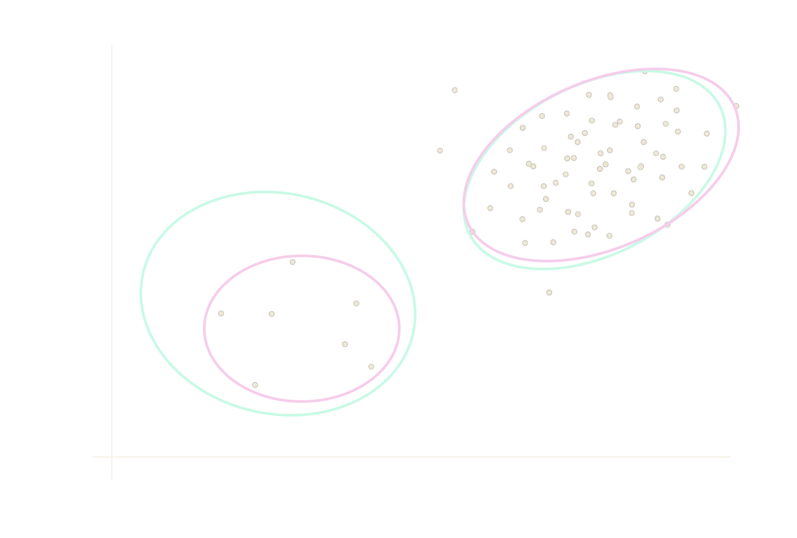
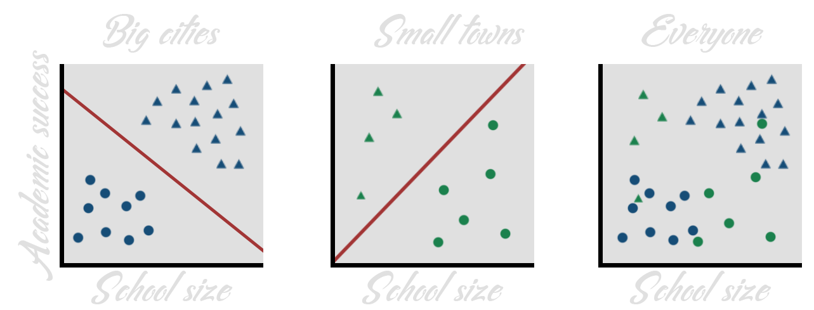

Trust me, I'm a data scientist
Ethics for builders of data-based applications
About me
- Sarah Diot-Girard
- Working in Machine Learning since 2012
- Currently at
- Interested in ethics but not an expert
Trust me, I'm a data scientist
Ethics for builders of data-based applications
Let's build an app using ML!
We want to help high schoolers
find the perfect major for them.
Let's collect data!
Measuring academic perfomances
- Let's use grades!
- Let's use grades with a weight depending on the high school!
- Let's use grades...?
Data collection
Learning from past biased data
Data collection
Sampling bias
Let's encode categorical data!
Bag of words vs word embeddings
Bag-of-words
['nurse', 'physician', 'math teacher']
'nurse': [1, 0, 0]
'physician': [0, 1, 0]
'math teacher': [0, 0, 1]
Word2Vec
['nurse', 'physician', 'math teacher']
'nurse': [.91, .87, .2, ...]
'physician': [.85, .86, .35, ...]
'math teacher': [.53, .64, .78, ...]
Word embeddings for the win
Word embeddings for the win
Word embeddings for the win
Word embeddings for the win
And now a message from the security team
Don't hoard data!
Work on anonymized data if you can!
Let's create a score to predict academic success!
What does it mean for an algorithm to be fair?
P(Y = grad| S = sref, G = b)
= P(Y = grad | S = sref, G = r)
For a same score, one has the same probability of graduating regardless of which subgroup one belongs to.
What does it mean for an algorithm to be fair?
P(Y = grad | S > sref, G = b)
= P(Y = grad | S > sref, G = r)
For a score higher than the threshold, one has the same probability of graduating regardless of which subgroup one belongs to.
What does it mean for an algorithm to be fair?
P(S <= sref | Y = grad, G = b)
= P(S <= sref | Y = grad, G = r)
If one will graduate, one has the same probability of getting a too low score regardless of which subgroup one belongs to.
E(S | Y = grad, G = b)= E(S | Y = grad, G = r)
The average score of graduating students is the same regardless of the subgroup.
What does it mean for an algorithm to be fair?
P(S > sref | Y = fail, G = b)
= P(S > sref | Y = fail, G = r)
If one will fail, one has the same probability of getting a too high score regardless of which subgroup one belongs to.
E(S | Y = fail, G = b)= E(S | Y = fail, G = r)
The average score of failing students is the same regardless of the subgroup.
What does it mean for an algorithm to be fair?
P(S > sref | G = b)
= P(S > sref | G = r)
The probability of having a score higher than the threshold is the same regardless of which subgroup one belongs to.
What does it mean for an algorithm to be fair?
All those criteria seem fair and reasonable.
Bad news, you cannot have all of them!
Who needs interpretability
when you can have deep learning?
A cautionary tale
Who needs interpretability
when you can have deep learning?
Before building a model:
visualisation (PCA, t-SNE),
exploratory analysis (clustering)
Who needs interpretability
when you can have deep learning?
While building a model:
sparsity, rule-based,
prototype-based
From ELI5 documentation
Who needs interpretability
when you can have deep learning?
After building a model:
surrogate models,
sensitivity analysis
Oh, you have minority classes...?
The less data you have, the less accurate you are.
Oh, you have minority classes...?
Minority subconcepts are considered as noise.
Let's evaluate our classifier!
How to overfit with a clean conscience?
- Evaluate on a separate dataset
- Fit preprocessing on the whole dataset
- Select the best algorithm on test data
- Use inappropriate performance metrics
Biases are not only in the data
- Apophenia
- Illusory causation
- Confirmation bias
Let's deploy our app in production!
Let's deploy our app in production!
Let's deploy our app in production!
Let's deploy our app in production!
Beware of feedback loops!
Make it scale!
What if our algorithm is used to match all students with their "chosen" major, nation-wide?
Key Takeaways
- Data is not neutral
- Algorithms are not objective
- Data scientists are not exempt from bias
Thanks for your attention!
sarah.diot-girard@people-doc.com

We're hiring !
References
Semantics derived automatically from language corpora contain human-like biases,
Caliskan et al.
Man is to Computer Programmer as Woman is to Homemaker? Debiasing Word Embeddings, Bolukbasi et al.
"How to make a racist AI without really trying", Rob Speer
Inherent Trade-Offs in the Fair Determination of Risk Scores , Kleinberg et al.
Fair prediction with disparate impact: A study of bias in recidivism prediction instruments ,
A. Chouldechova
21 fairness definitions and their politics, A. Narayanan
The ELI5 library
The FairML project
“Why Should I Trust You?” Explaining the Predictions of Any Classifier, Ribeiro et al
Weapons of Math Destruction, Cathy O'Neil